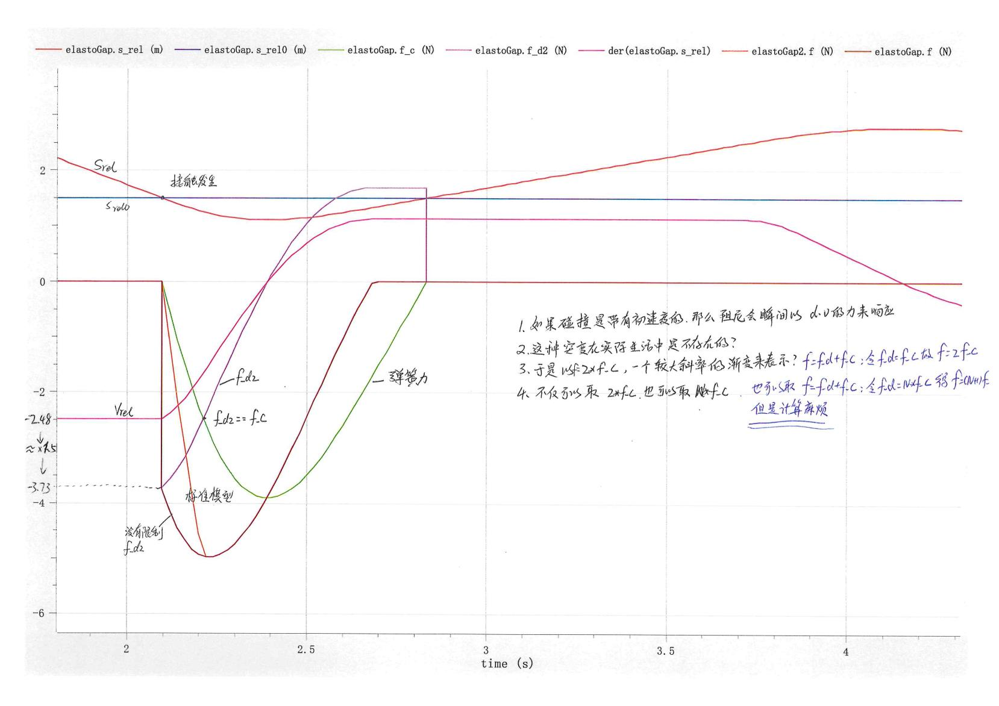

常见问题
class与model的区别：多数情况下
class与model并无严格区别，但现在一般推荐使用model：
class只包含类的定义、注解和扩展语句，可以被任何事物继承。多用于定义一些图标信息；
model只能被model继承。
Difference between Class and Model in OpenModellica
inner和outer关键字：inner和outer用来声明和使用全局变量（跨越模块的同一变量），切记变量名和变量类型都要相同！！！
out：表示该变量将在模型外部被声明；
inner：表示该变量将被传递进入所有需要的子组件Across/Through Variable跨越变量与穿越变量的区别：Across跨越变量：需要通过测量元件两端的差值、下降而得到的变量。这些变量在拓扑图上任何闭环的回路上的和都为0。KVL 定律。Through穿越变量：需要通过串联在端点之间才能测量到的变量。这种变量在拓扑图上某一节点（元件）上的总和为0。KCL 定律。
- 单位自动转换：可以通过以下形式定义类型
package Types // 需要注意的是，虽然这样可以实现单位转换，但是在给参数赋默认值的时候，还是以原类型给定的。 type Litre = Modelica.Units.SI.Volume(displayUnit="l",nominal=1e-3); // 显示单位首字母必须小写 type Pressure = Modelica.Units.SI.Pressure(displayUnit="mmHg", nominal=133.322387415); end Types; - 关于
ElastoGap中，合力 情况之说明。因为力是不能突变的，如果在接触理想的弹簧-阻尼系统时带有初速度。则会造成阻尼力瞬间跳变到一个很大的值（没有加速过程）。这是不可接受的，所以可以人工取一个加速过程，令 主要是计算也比较简单：

一个很残酷的现实：学好Modelica 的前提是你必须非常了解你的问题！